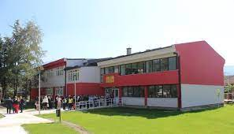
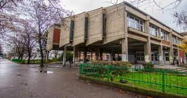

I studied at the elementary school "Dimitar Pop Georgiev Berovski." The school provided a nurturing environment for my education. The teachers and curriculum encouraged my love for learning, fostering intellectual growth. I gained essential academic skills and learned important values like perseverance and teamwork. His time at the school laid the foundation for his future successes, instilling in me a passion for education and a thirst for knowledge.

I attended "Orce Nikolov" High School in Skopje, Macedonia. The school offered a diverse curriculum and a supportive environment for my education. I developed critical thinking skills and explored various subjects. The high school's emphasis on holistic development fostered his personal growth and instilled important values. My time at "Orce Nikolov" prepared me for future success and provided a fulfilling educational experience.
